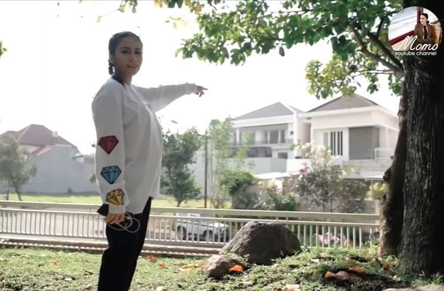
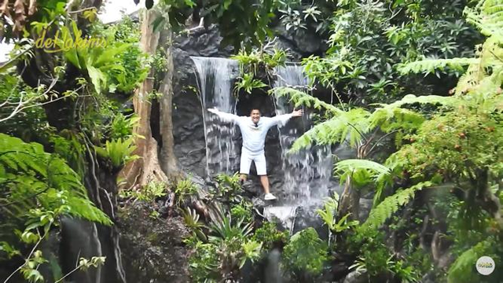
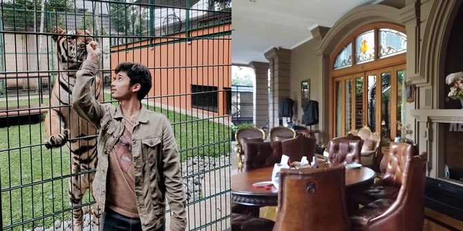

1. Momo Geisha

Setelah menikah, Momo Geisha memiliki rumah yang cukup mewah. Bukan hanya mewah, fasilitas yang ada di kediaman Momo yang berlokasi di Malang Jawa Timur itu juga cukup membuat berdecak kagum. Kediaman Momo yang berlokasi di Malang Jawa Timur itu memiliki fasilitas yang cukup membuat berdecak kagum. Ruang makannya itu terlihat seperti ruang makan di restoran mewah, lengkap dengan piano yang ditempatkan di seberang meja makan. Selain itu, Momo juga disebut menyewa chef profesional untuk membuatkan hidangan sehari-hari hanya karena dia tidak bisa memasak. Rumah Momo dilengkapi dengan garasi yang bisa menampung hingga 10 mobil. Bukan hanya mobil atau kendaraan roda dua lainnya, di dalam rumah itu Momo juga memiliki jetski yang harganya tentu cukup mahal. Kamar tamu di rumah Momo didesain bak kamar tidur di hotel bintang lima. Tamu pasti betah berlama-lama tidur di rumah Momo. Selain itu, juga tersedia fasilitas gym yang super lengkap dan bisa digunakan kapan saja. Fasilitas lain yang membuat takjub yaitu selain kolam renang, dia juga memiliki danau buatan sendiri lengkap dengan fasilitas golf di area rumahnya.
2. Irfan Hakim

Rumah Irfan Hakim yang dibangun sejak 2018 yang berlokasi di daerah Jaticempaka, Bekasi, Jawa Barat. Meski terletak di gang buntu, tempat tinggal Irfan Hakim yang satu ini cukup strategis dan tidak jauh dari jalan tol. Mengusung konsep rumah joglo, yang terdiri dari 5 lantai. Desain rumah Irfan Hakim mengutamakan keindahan estetika melalui desain kayu jati autentik. Hal ini bisa terlihat dari dinding rumah yang dibalut dengan kayu asli berwarna cokelat tua. Rumah Irfan Hakim juga populer berkat keberadaan aviary di pekarangannya. Aviary adalah sebuah kandang burung raksasa, yang diisi oleh berbagai spesies langka. Dibangunnya kandang burung raksasa ini, karena perhatian Irfan Hakim terhadap kesejahteraan hewan di masa pandemi COVID-19. Aviary tersebut diramaikan dengan berbagai hewan seperti hewan buas, aneka burung, kura-kura raksasa, dan beberapa hewan langka.
3. Alshad Ahmad

Alshad Ahmad terkenal sebagai konten kreator yang memberi edukasi mengenai konservasi satwa-satwa liar melalui kanal YouTube pribadinya. Mengintip kehidupan sehari-harinya, sepupu dari Raffi Ahmad ini ternyata tak kalah 'sultan', lho! Alshad tinggal di rumah mewah dan megah milik orangtuanya yang ditaksir seharga Rp 300 miliar di kawasan Bandung, Jawa Barat. Rumah Alshad tampak seperti istana yang begitu megah. Alshad mengungkapkan bahwa ia telah menempati rumah ini bersama keluarganya sudah selama 15-16 tahun. Hunian mewah dengan luas 35.000 hektar tersebut bahkan ditaksir seharga Rp 300 miliar. Ternyata rumah tersebut didesain langsung oleh Mansyur Ahmad, yakni sang Papa dari Alshad. Bagian dalam rumah Alshad dilengkapi dengan perabotan bergaya vintage. Alshad memiliki musholla di rumahnya yang sangat sejuk dan terlihat nyaman untuk dipakai beribadah. Ruang keluarga di rumah Alshad sengaja di desain secara terbuka dan luas agar tidak membatasi ruang gerak seluruh anggota keluarga ketika sedang berkumpul di sana. Di rumah Alshad terdapat skywalk atau jembatan di lantai dua untuk menuju ke ruang-ruang lainnya. Di halaman belakang rumah Alshad terdapat kolam yang dekorasi bebatuan besar serta gym pribadi. Selain itu, di rumah Alshad terdapat penangkaran hewan liar dan langka. Penangkaran tersebut telah mengantongi izin dari BBKSDA (Balai Besar Konservasi Sumber Daya Alam) Jawa Barat dan Alshad terdaftar sebagai pemilik penangkaran PT Taman Satwa Eksotik. Hewan yang dipelihara Alshad Ahmad diantaranya harimau, rusa totol India, binturong dan berbagai jenis burung seperti macaw, merak serta burung unta.
SHINTA APRILIA
1121025100050
5A-Ilmu Perpustakaan